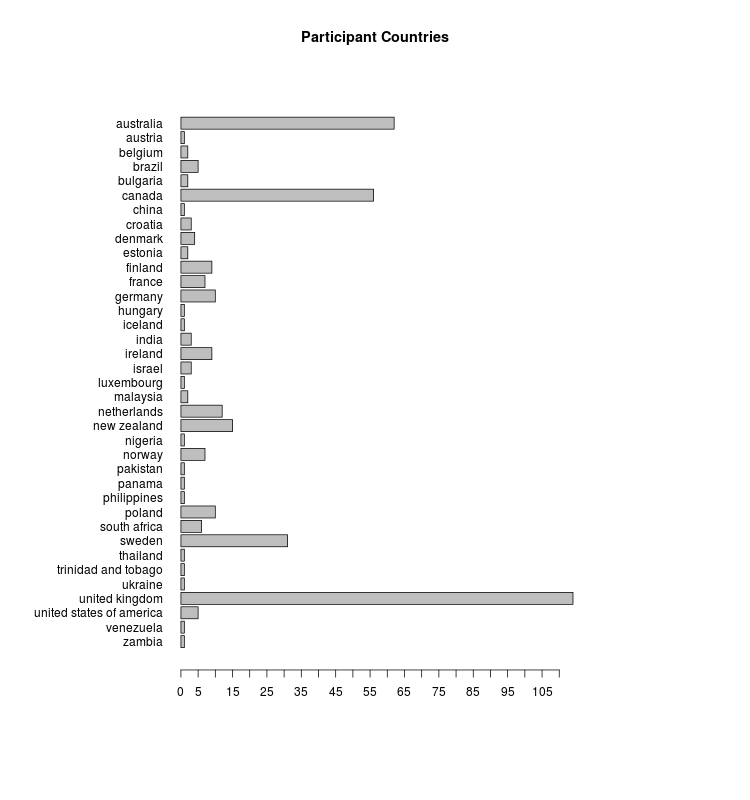
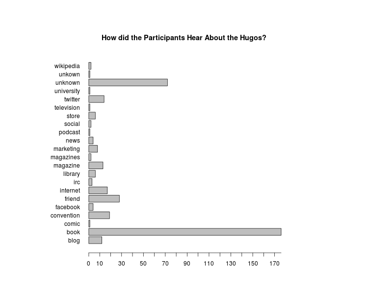

Genre and Public Rhetoric: Science Fiction, Social Justice, and the Hugo Awards
This article investigates the public discourse surrounding the 2015 Hugo Awards.




This article investigates the public discourse surrounding the 2015 Hugo Awards.